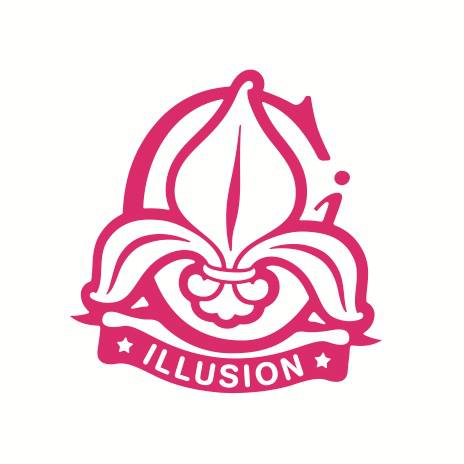

Tartusse pidutsema? Siin linnas toimub nii mõndagi! Sõltuvalt muusikamaitsest ja seltskonna eelistusest võib õige peo või õige koha leidmine olla väikest viisi väljakutse. Alati võib kindel olla pidude meistrile Shootersile, vanale heale Club Illusionile ja uuele elamusbaarile Forrestile.
| Shooters on hubane kohake Vallikraavi tänaval, kus on kõik Eesti legendaarsemad DJd mänginud. Seda kohta kutsutakse ka "before-you-hit-the-clubs" klubiks. Mis peamine, kõik shotid tulevad viiekaupa. |
|---|
| Club Illusion on ehitatud endise kino Illusioon ja kultuslike underground pidude toimumiskoha ruumidesse Raatuse tänaval. On suunatud head sisekujundust, tipptasemel valgust ja heli ning head muusikat hindavale inimesele. |
| Forrest on midagi enamat kui lihtsalt söögikoht - see on mõttemaailm ja elustiil. Forrestist leiab igaüks endale midagi meelepärast ja unustamatut. Forrest pakub pidevat rõõmu, uusi ägedaid maitseid ning erilisi elamusi terve päeva vältel. |
| Uuri lisainfot klubide lehtedelt: |
|  |